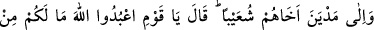
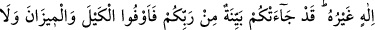
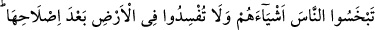
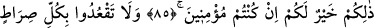
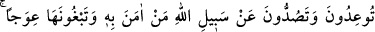
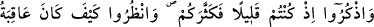
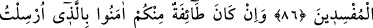
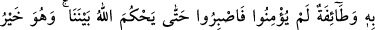
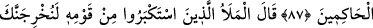
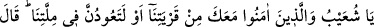
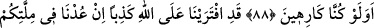
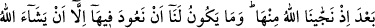
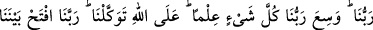
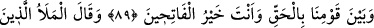
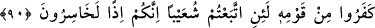
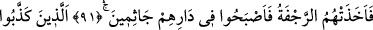
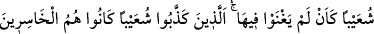
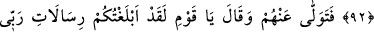
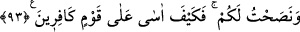
ŞUAYB ALEYHİSSELÂM
VE KAVMİ
85. Medyen’e de kardeşleri Şuayb’ı (gönderdik). Dedi ki: ey kavmim! Allah’a
kulluk edin, sizin ondan başka tanrınız yoktur. Size Rabbinizden açık bir delil
gelmiştir; artık ölçüyü, tartıyı tam yapın, insanların eşyalarını eksik vermeyin.
Düzeltilmesinden sonra yeryüzünde bozgunculuk yapmayın. Eğer inananlar iseniz
bunlar sizin için daha hayırlıdır.
86. Tehdit ederek, inananları Allah yolundan alıkoyarak ve o yolu eğip bükmek
isteyerek öyle her yolun başında oturmayın. Düşünün ki siz az idiniz de O sizi